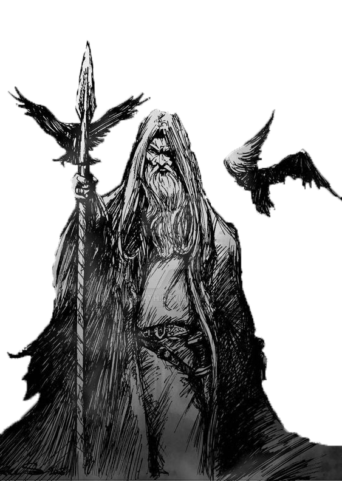
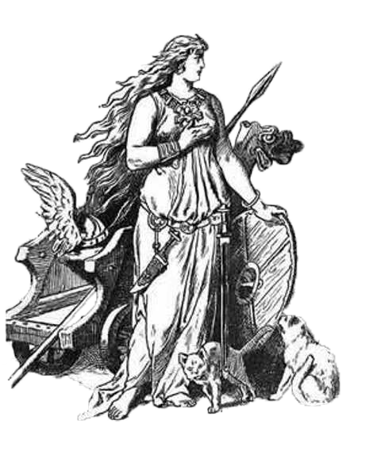
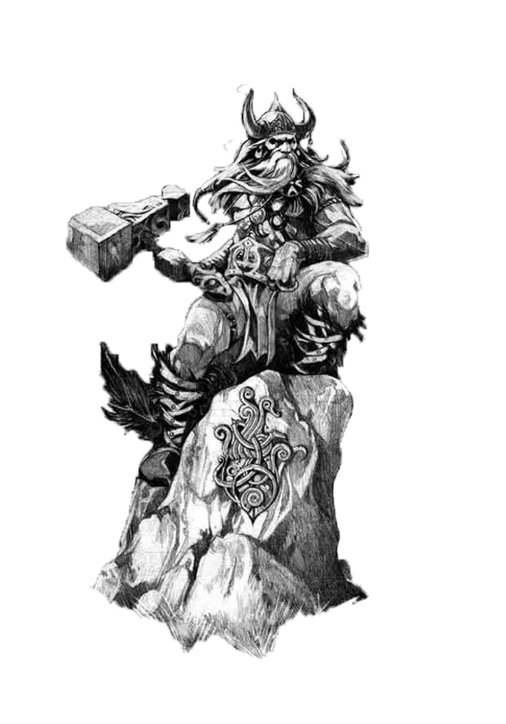

Odin, der mächtige Gott der nordischen Mythologie, ist bekannt als der Allvater, der Weisheit und Krieg gleichermaßen verkörpert. Er herrscht über Walhall, den Saal der gefallenen Krieger, und wird oft als ein weiser Wanderer dargestellt, der stets nach Wissen strebt. Mit seinem treuen Raben Huginn und Muninn und seinem Wölfen Geri und Freki an seiner Seite, verkörpert er die Dualität von Weisheit und Stärke. Odin opferte sogar sein Auge, um die Weisheit der Welten zu erlangen. Sein Charakter ist komplex, voller Rätsel und Tiefen, und sein Einfluss reicht weit über die Grenzen der nordischen Mythologie hinaus.
Freya ist eine der faszinierendsten Göttinnen in der nordischen Mythologie. Als Göttin der Liebe, Schönheit und Fruchtbarkeit verkörpert sie eine kraftvolle weibliche Energie. Sie besitzt auch die Fähigkeit, Kriegern in Schlachten beizustehen und ihnen Mut zu verleihen. Freya reist oft mit ihrer Kutsche, die von Katzen gezogen wird, und ist bekannt für ihre Sinnlichkeit und Unabhängigkeit. Sie ist die Schwester des Gottes Freyr und die Tochter des Meeresgottes Njörðr. In vielen Geschichten der nordischen Mythologie spielt Freya eine bedeutende Rolle und wird oft als eine der mächtigsten und verehrtesten Göttinnen dargestellt.
Thor ist eine zentrale Figur in der nordischen Mythologie und wird als der mächtige Gott des Donners verehrt. Er ist bekannt für seine immense Stärke, seinen Mut und seinen unwiderstehlichen Charakter. Thor ist der Sohn von Odin, dem obersten Gott, und wird oft mit seinem mächtigen Hammer Mjölnir dargestellt, der die Kraft besitzt, Blitze zu schleudern und Feinde zu vernichten. Neben seiner Rolle als Kriegsgott wird Thor auch als Beschützer der Menschen und Verteidiger der Götter angesehen. Seine Abenteuer und Heldentaten sind in zahlreichen nordischen Mythen und Legenden verewigt, und er wird von vielen als Symbol für Stärke, Tapferkeit und Gerechtigkeit verehrt.
